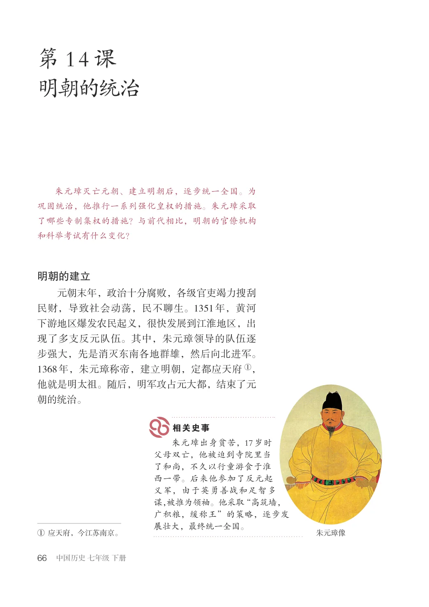
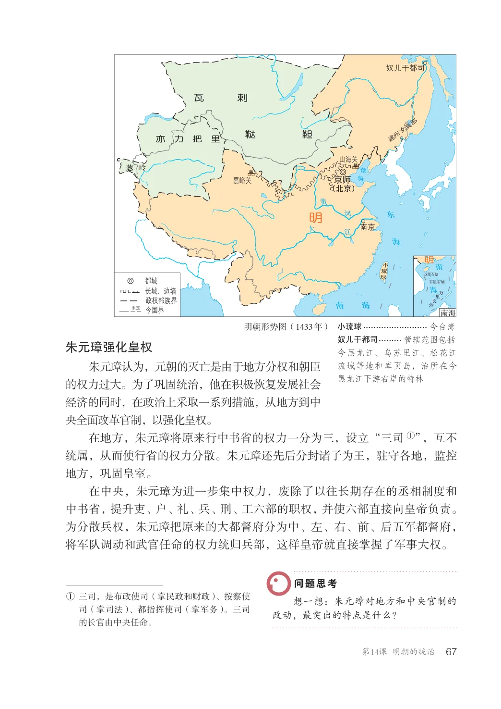
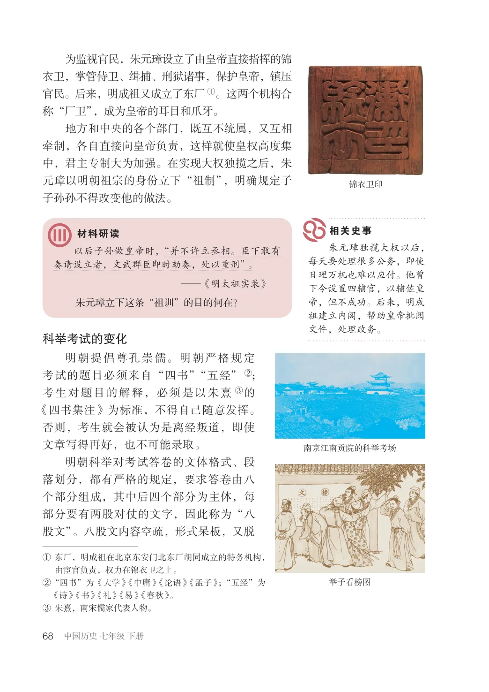
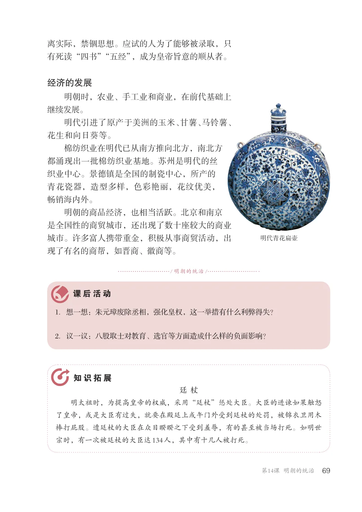

第3单元 · 教材第 66–69 页
第14课 明朝的统治
文字版依据教材 PDF 文本层整理；复杂地图、图表及版面关系请以右侧教材原页为准。
朱元璋灭亡元朝、建立明朝后，逐步统一全国。为巩固统治，他推行一系列强化皇权的措施。朱元璋采取了哪些专制集权的措施？与前代相比，明朝的官僚机构和科举考试有什么变化？
明朝的建立
元朝末年，政治十分腐败，各级官吏竭力搜刮民财，导致社会动荡，民不聊生。1351年，黄河下游地区爆发农民起义，很快发展到江淮地区，出现了多支反元队伍。其中，朱元璋领导的队伍逐步强大，先是消灭东南各地群雄，然后向北进军。1368年，朱元璋称帝，建立明朝，定都应天府①，他就是明太祖。随后，明军攻占元大都，结束了元朝的统治。
朱元璋出身贫苦，17岁时父母双亡，他被迫到寺院里当了和尚，不久以行童游食于淮西一带。后来他参加了反元起义军，由于英勇善战和足智多谋，被推为领袖。他采取“高筑墙，广积粮，缓称王”的策略，逐步发展壮大，最终统一全国。
①应天府，今江苏南京。
朱元璋像

奴儿干都司
瓦剌
建州女真部
鞑靼
亦力把里
嘉峪关京师
（北京）
明
万里石塘
都城长城、边墙
石星石塘
万里长沙今国界未定南海
政权部族界
明朝形势图（1433年）小琉球......................... 今台湾
奴儿干都司.......... 管辖范围包括今黑龙江、乌苏里江、松花江
朱元璋强化皇权
朱元璋认为，元朝的灭亡是由于地方分权和朝臣的权力过大。为了巩固统治，他在积极恢复发展社会经济的同时，在政治上采取一系列措施，从地方到中央全面改革官制，以强化皇权。在地方，朱元璋将原来行中书省的权力一分为三，设立“三司①”，互不统属，从而使行省的权力分散。朱元璋还先后分封诸子为王，驻守各地，监控地方，巩固皇室。在中央，朱元璋为进一步集中权力，废除了以往长期存在的丞相制度和中书省，提升吏、户、礼、兵、刑、工六部的职权，并使六部直接向皇帝负责。为分散兵权，朱元璋把原来的大都督府分为中、左、右、前、后五军都督府，将军队调动和武官任命的权力统归兵部，这样皇帝就直接掌握了军事大权。
流域等地和库页岛，治所在今黑龙江下游右岸的特林
①三司，是布政使司（掌民政和财政）、按察使
想一想：朱元璋对地方和中央官制的改动，最突出的特点是什么？
司（掌司法）、都指挥使司（掌军务）。三司的长官由中央任命。

为监视官民，朱元璋设立了由皇帝直接指挥的锦衣卫，掌管侍卫、缉捕、刑狱诸事，保护皇帝，镇压官民。后来，明成祖又成立了东厂①。这两个机构合称“厂卫”，成为皇帝的耳目和爪牙。地方和中央的各个部门，既互不统属，又互相牵制，各自直接向皇帝负责，这样就使皇权高度集中，君主专制大为加强。在实现大权独揽之后，朱元璋以明朝祖宗的身份立下“祖制”，明确规定子子孙孙不得改变他的做法。
锦衣卫印
朱元璋独揽大权以后，每天要处理很多公务，即使日理万机也难以应付。他曾下令设置四辅官，以辅佐皇帝，但不成功。后来，明成祖建立内阁，帮助皇帝批阅文件，处理政务。
以后子孙做皇帝时，“并不许立丞相。臣下敢有奏请设立者，文武群臣即时劾奏，处以重刑”。
—《明太祖实录》朱元璋立下这条“祖训”的目的何在？
科举考试的变化
明朝提倡尊孔崇儒。明朝严格规定考试的题目必须来自“四书”“五经”②；考生对题目的解释，必须是以朱熹③的《四书集注》为标准，不得自己随意发挥。否则，考生就会被认为是离经叛道，即使文章写得再好，也不可能录取。明朝科举对考试答卷的文体格式、段落划分，都有严格的规定，要求答卷由八个部分组成，其中后四个部分为主体，每部分要有两股对仗的文字，因此称为“八股文”。八股文内容空疏，形式呆板，又脱
南京江南贡院的科举考场
①东厂，明成祖在北京东安门北东厂胡同成立的特务机构，
由宦官负责，权力在锦衣卫之上。②“四书”为《大学》《中庸》《论语》《孟子》；“五经”为
举子看榜图
《诗》《书》《礼》《易》《春秋》。③朱熹，南宋儒家代表人物。

离实际，禁锢思想。应试的人为了能够被录取，只有死读“四书”“五经”，成为皇帝旨意的顺从者。
经济的发展
明朝时，农业、手工业和商业，在前代基础上继续发展。明代引进了原产于美洲的玉米、甘薯、马铃薯、花生和向日葵等。棉纺织业在明代已从南方推向北方，南北方都涌现出一批棉纺织业基地。苏州是明代的丝织业中心。景德镇是全国的制瓷中心，所产的青花瓷器，造型多样，色彩艳丽，花纹优美，畅销海内外。明朝的商品经济，也相当活跃。北京和南京是全国性的商贸城市，还出现了数十座较大的商业城市。许多富人携带重金，积极从事商贸活动，出现了有名的商帮，如晋商、徽商等。
明代青花扁壶
/ 明朝的统治/
1．想一想：朱元璋废除丞相，强化皇权，这一举措有什么利弊得失？
2．议一议：八股取士对教育、选官等方面造成什么样的负面影响？
廷杖明太祖时，为提高皇帝的权威，采用“廷杖”惩处大臣。大臣的进谏如果触怒了皇帝，或是大臣有过失，就要在殿廷上或午门外受到廷杖的处罚，被锦衣卫用木棒打屁股。遭廷杖的大臣在众目睽睽之下受到羞辱，有的甚至被当场打死。如明世宗时，有一次被廷杖的大臣达134人，其中有十几人被打死。
